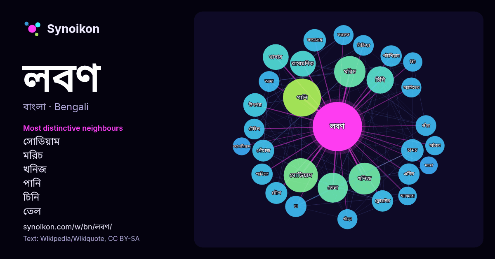

বাংলা · আজকের শব্দের তালিকা
লবণ
“salt” · উইকিপিডিয়া, Wikiquote থেকে 899টি প্রয়োগে এর চারপাশে পাওয়া শব্দ।

সবচেয়ে স্বতন্ত্র প্রতিবেশী
- সোডিয়াম 39×
- মরিচ 34×
- খনিজ 30×
- পানি 25×
- চিনি 24×
- তেল 23×
- সত্যাগ্রহ 19×
- চামচ 19×
- পেঁয়াজ 18×
- পটাশিয়াম 17×
- ক্লোরাইড 17×
- আদা 16×
- গুঁড়া 16×
- যৌগ 16×
- রাসায়নিক 16×
- এসিড 15×
- টেবিল 15×
- অ্যাসিডের 15×
- গুঁড়ো 15×
- খাবার 15×
× = সাধারণ উইকিপিডিয়া টেক্সটের চেয়ে কত গুণ বেশি।
সবচেয়ে ঘন ঘন প্রতিবেশী
- পানি 54
- সোডিয়াম 44
- খনিজ 38
- মরিচ 37
- তেল 34
- তৈরি 34
- চিনি 28
- পরিচিত 26
- খাবার 25
- রাসায়নিক 25
- উৎপন্ন 21
- উৎপাদন 21
- সাধারণত 21
- চামচ 19
- জল 19
- সত্যাগ্রহ 19
- পেঁয়াজ 18
- ব্যবহৃত 18
- যৌগ 18
- এসিড 17
প্রসঙ্গে
- লবণ বা নুন হল একটি খনিজ উপাদান ইহা সোডিয়াম ক্লোরাইড (NaCl) দ্বারা গঠিত একটি রাসায়নিক যৌগ যা লবণের বৃহত্তর শ্রেণীর অন্তর্গত। লবণ এক ধরনের প্রাকৃতিক স্ফটিক Wikipedia snippets · লবণ
- বিট লবণ বা বিট নুন; (হিন্দি: काला नमक, নেপালি: बिरे नुन,মারাঠি: काळं मीठ; গুজরাতি: સંચળ, তামিল: இந்துப்பு, মালয়ালম: ഇന്തുപ്പ്,উর্দু: نمک کالا) এক প্রকারের Wikipedia snippets · বিট লবণ
- দ্বারা (যেমন, সোডিয়াম লবণ বা অ্যামোনিয়াম লবণ) অথবা অ্যানায়নের নাম দ্বারা (যেমন, ক্লোরাইড লবণ বা এসেটেট লবণ) ডাকা হয়। সাধারণ লবণ গঠনকারী ক্যাটায়ন হলো: Wikipedia snippets · লবণ (রসায়ন)
- বা লবণ সত্যাগ্রহ শুরু হয়। এই সত্যাগ্রহ ছিল ভারতের স্বাধীনতা আন্দোলনের একটি গুরুত্বপূর্ণ অংশ। লবণ পদযাত্রা ঔপনিবেশিক ভারতে ব্রিটিশদের একচেটিয়া লবণ নীতির Wikipedia snippets · লবণ সত্যাগ্রহ
- রিভার রিড সল্ট নামে অধুনা পরিচিত[তথ্যসূত্র প্রয়োজন] কেনিয়ার এই লবণটি নিজোয়া নদীর তীরে জন্মানো বিশেষ এক প্রকার খাগড়া থেকে নিষ্কাশিত ভক্ষণোপযোগী একটি Wikipedia snippets · কেনিয়ার খাগড়াজাতীয় উদ্ভিদের লবণ
- হিমালয় লবণ বা হিমালয়ান লবণ বা গোলাপি লবণ বা সৈন্ধব লবণ হল শিলা লবণ যা পাকিস্তানের পাঞ্জাব অঞ্চল থেকে খনন করা হয়। এই লবণে প্রায়শই খনিজ পদার্থের কারণে Wikipedia snippets · হিমালয় লবণ
- ডিসেম্বর থেকে মধ্য মে মাস পর্যন্ত লবণ উৎপাদিত হয়ে আসছে। বর্তমানে খুলনা ও সাতক্ষীরা অঞ্চলেও লবণ উৎপাদন শুরু হয়েছে। পূর্বে লবণ উৎপাদনের জন্য সমুদ্রের পানি চুলায় Wikipedia snippets · বাংলাদেশের লবণ শিল্প
- এটি হচ্ছে দেশ অনুযায়ী লবণ উৎপাদন তালিকা। লবণের শীর্ষ ৫ উৎপাদক রাষ্ট্র হলো, চীন , মার্কিন যুক্তরাষ্ট্র, ভারত ,জার্মানি এবং কানাডা । প্রথম তালিকাটিতে রয়েছে Wikipedia snippets · লবণ উৎপাদন অনুযায়ী দেশের তালিকা
আরও শব্দ
- অরণ্য
- আয়না
- ইতিহাস
- ঈশ্বর
- কাজ
- কুকুর
- ক্ষমতা
- খাদ্য
- গান
- গ্রীষ্ম
- ঘড়ি
- ঘণ্টা
- ঘোড়া
- ছায়া
- জননী
- জলবায়ু
- জীবন
- ঝড়
- টাকা
- ট্রেন
- দারুচিনি
- দ্বীপ
- নক্ষত্র
- নীরবতা
- পরিবার
- পানি
- পাহাড়
- প্রকৃতি
- বাগান
- বিজ্ঞান
- বিড়াল
- বৃষ্টি
- ভাষা
- মধু
- মরুভূমি
- মানচিত্র
- মৃত্যু
- রাস্তা
- রুটি
- শরৎ
- শহর
- শিল্প
- শীত
- সত্য
- সময়
- সেতু
- সোনা
- স্বাস্থ্য
- হৃদয়
2026-10-09 তারিখে ডিফল্ট সেটিংসে (±5 শব্দ, মাঝারি কর্পাস) আগে থেকে গণনা করা। ইন্টারঅ্যাক্টিভ মানচিত্র লাইভ ডেটা দিয়ে এটি হালনাগাদ করতে পারে।
যন্ত্রে অনূদিত ইন্টারফেস; সংশোধন স্বাগত।